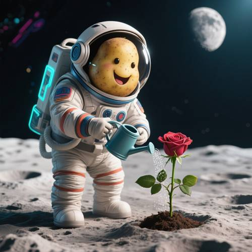
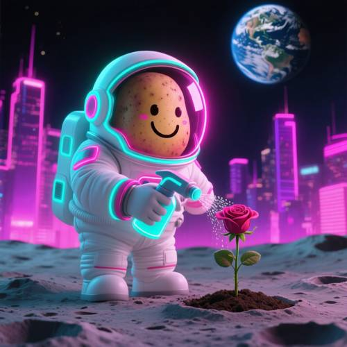
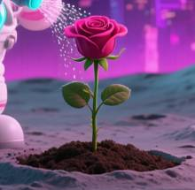
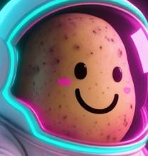

Grammar — A potato astronaut in a spacesuit is watering a rose plant on the moon
A potato astronaut in a spacesuit is watering a rose plant on the moon. It looks happy, Cyberpunk style.

Direct — one call, no iteration

Continuum — Qwen3.8-27B + Qwen-Image
Judge — Direct
PASSGrammar - Pronoun Reference — The potato astronaut has a wide smile, rosy cheeks, and cheerful eyes, visually conveying a happy expression. The pronoun 'It' in 'It looks happy' refers to the potato astronaut, and this attribute is successfully depicted.
FAILStyle — The image does not exhibit a Cyberpunk style. While there are some neon blue lights on the astronaut's backpack, the overall aesthetic is bright, clean, and cute, lacking the characteristic gritty, dystopian, high-tech, low-life urban elements of the Cyberpunk genre. The style is more akin to a cute, sci-fi illustration.
Judge — Continuum
PASSGrammar - Pronoun Reference — The pronoun 'It' refers to the 'potato astronaut'. The image correctly depicts this by showing the potato inside the helmet with a large, simple smiley face drawn on it, which visually represents a happy expression.
PASSStyle — The image incorporates a Cyberpunk style through its visual elements. The background features a futuristic city skyline with tall buildings illuminated by glowing pink and purple neon lights. The astronaut's spacesuit and the spray bottle it holds are also accented with bright, glowing neon lines in cyan and pink, set against a dark, night-like environment, which is characteristic of the cyberpunk aesthetic.
What the agent did
Thinking
Let me create an image. Prompt: a potato astronaut in a spacesuit watering a rose plant on the Moon, looking happy, cyberpunk style. Generate with qwen-image at default size (1024x1024). Let me write a detailed visual prompt. First, let's generate.
Step 1 — `generate_image`
{
"prompt": "A cheerful potato character in a bulky white astronaut spacesuit with glowing cyan and magenta neon accents, helmet visor reflecting neon light, holding a futuristic spray bottle and watering a small rose plant growing in a patch of lunar soil on the moon's surface. The potato has a big happy smile face drawn on its skin, rosy glow. Cyberpunk style: neon city skyline in the far background, pink and purple neon lighting, holographic glow, dark night sky with Earth visible, high contrast, detailed digital art, vibrant neon colors.",
"model": "qwen-image"
}
Result img_0
Thinking
This image is actually very good. Let me check the details: 1. Potato astronaut in a spacesuit ✓ — Potato with a happy face in an astronaut suit. 2. Watering a rose plant on the moon ✓ — Spraying water from a bottle onto a rose. 3. Looks happy ✓ — Smiling. 4. Cyberpunk style ✓ — Neon city skyline, neon accents. Let me zoom in to check the details — the face, the rose, and the watering action. The image looks complete. Let me quickly inspect the face/rose area to make sure there are no artifacts.
Model
The first generation looks strong. Let me zoom in to verify details before deciding.
Step 2 — `inspect_region`
{
"image": "img_0",
"roi": "the rose plant with soil",
"padding": 0.1
}
Result img_1

Step 3 — `inspect_region`
{
"image": "img_0",
"roi": "the potato face in the helmet",
"padding": 0.1
}
Result img_2

Thinking
Details confirmed: - Rose: a beautiful pink/magenta rose with leaves, growing in a patch of dark soil, being watered with visible water droplets. ✓ - Face: happy smile, eyes, blushing cheeks — clearly a happy potato. ✓ All elements of the prompt are present and correct: 1. Potato astronaut wearing a spacesuit ✓ 2. Watering a rose plant ✓ (visible spray) 3. On the moon (lunar soil, Earth in the background) ✓ 4. Happy ✓ 5. Cyberpunk style ✓ (neon city, cyan/magenta neon) This is a high-quality result that meets all requirements. Marking this as the best and stopping.
Model
Everything checks out at full resolution: the rose is healthy with a visible water spray from the bottle, the potato's face is clearly happy, and the lunar ground plus neon cyberpunk skyline frame it all. All prompt elements are present and correct.
Step 4 — `mark_best`
{
"image": "img_0",
"reason": "All requested elements present and verified at crop resolution: potato astronaut in spacesuit, watering a rose plant, on the moon (lunar soil, Earth in background), happy smiling face, and strong cyberpunk neon style."
}
Thinking
Done. The image meets all the requirements, and I've marked it as the best. I'll stop here and summarize.
Model
Done! The final image features a happy, smiling potato astronaut in a white spacesuit with cyan and magenta neon trim, watering a pink rose planted in a mound of lunar soil with a glowing spray bottle. The scene sits on the moon's cratered surface with Earth in the night sky and a neon cyberpunk city skyline glowing in the background. Verified details: the water spray is visible on the rose, the soil patch reads clearly as lunar ground, and the potato's face is unmistakably cheerful. Marked as the best result.